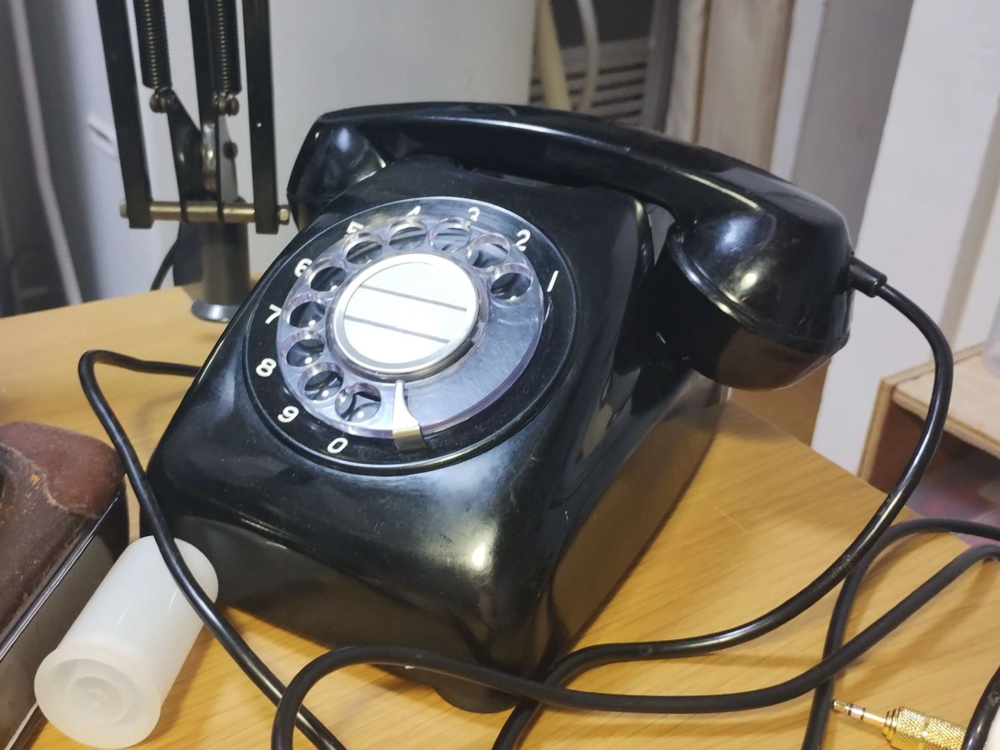
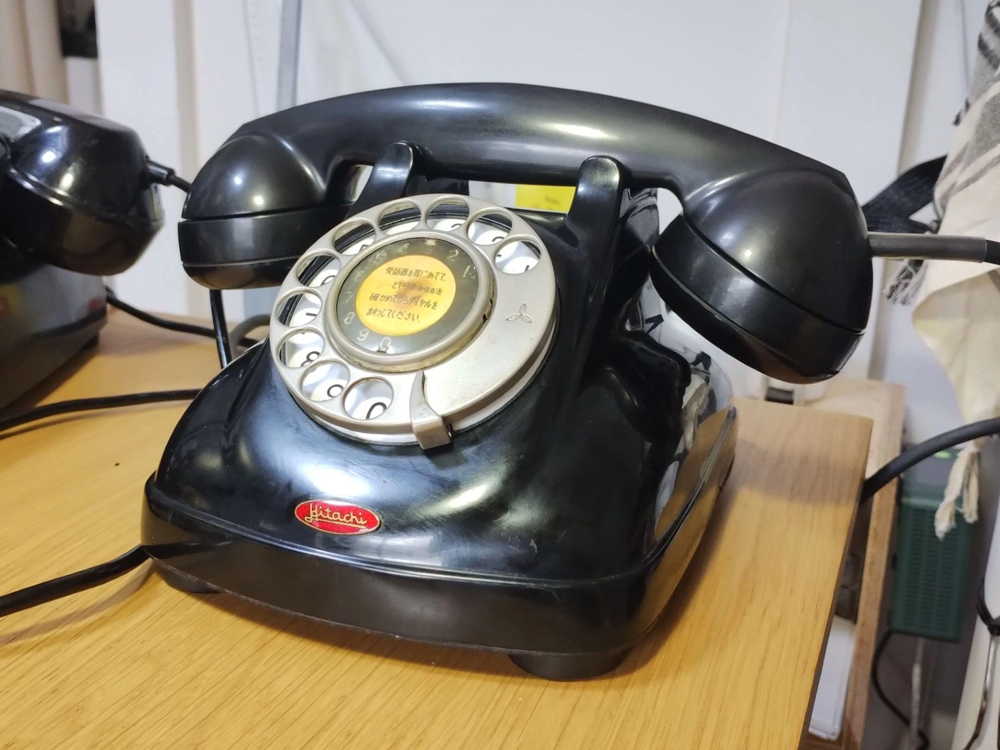
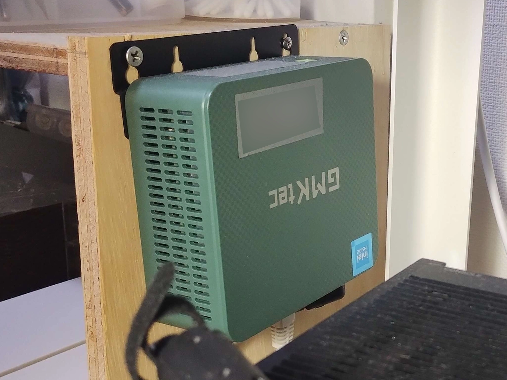

電話機
電話機の画像（購入順）
600型（600-A1）
1965年製。裏面に1965年6月29日の検査表記あり
4号電話機
1959年、日立製作所製。共電式からの改造品。ダイヤルには1965年のスタンプあり。
邮电部天津电话设备厂 HB680型自动电话机
HB680型自动电话机（自働電話機）。中華人民共和国製。1988年4月、邮电部天津电话设备厂（郵電部天津電話設備廠）製造。規格は日本と同様のようで、Yamaha RT58iで発信・着信ともに可能。
601型電話機（601-A2）
1986年製。ダイヤルにNTTのロゴが刻印されている。モジュラージャック仕様。
その他
これらの電話機を東京広域電話網に接続するために使っているサーバー。